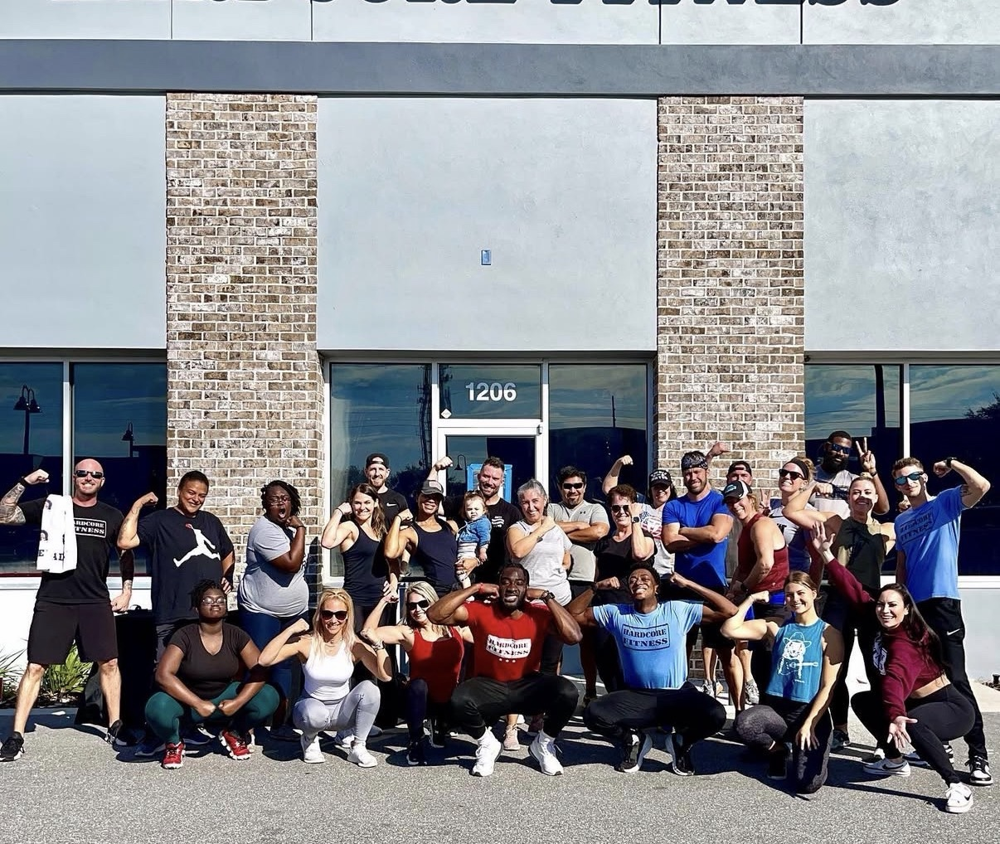
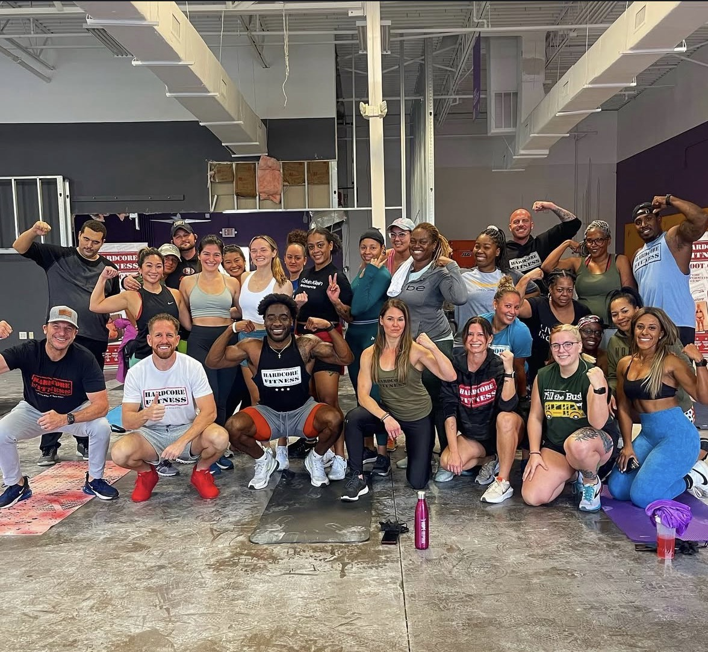
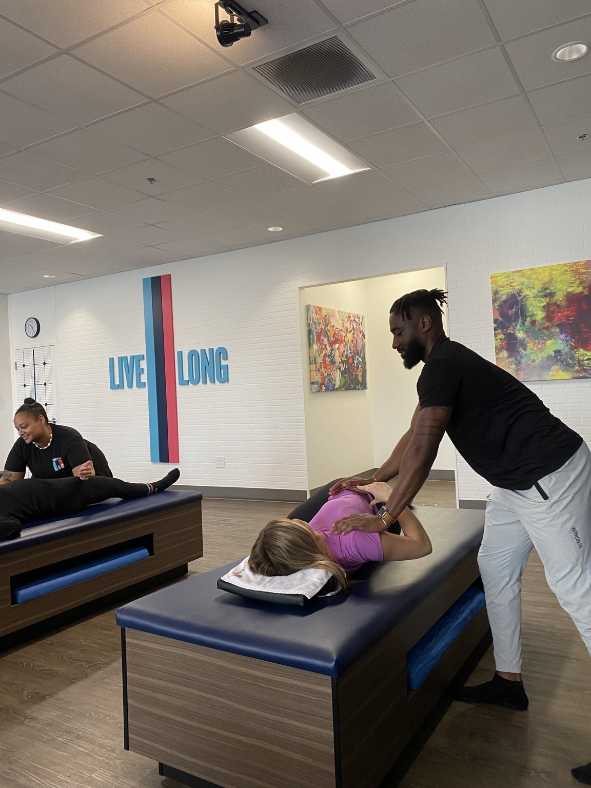

🎙
Speaker
Engaging audiences with purpose and perspective.
Broadcaster • Performance Coach • Speaker
Fortifying performance in the moment. Elevating the audience's experience of it.
Engaging audiences with purpose and perspective.
Telling stories. Calling the moments that matter.
Developing bodies, building habits, elevating performance.
A performance-driven approach to health and human potential.
Meet Alvin Delve
A voice for the game. A coach for the body. A messenger for the standard.
Alvin Delve is an ESPN analyst, football broadcaster, and performance coach whose career sits at the intersection of elite athletics, media, and human performance.
As an ESPN+ analyst, Alvin has covered college basketball, volleyball, baseball, softball, football, and track & field across the ASUN Conference, including championship coverage for ASUN basketball and track & field. His international experience includes English-language championship basketball broadcasts in Italy’s Serie A, while his performance background has also led to FOX appearances as a fitness expert.
Beyond the broadcast booth, Alvin founded Delve Into Fitness, a biomechanics and performance-based coaching company built to help athletes and professionals move with intention, reduce injury risk, and unlock higher levels of performance.
A former NCAA Division I football athlete, Alvin brings competitive experience, professional analysis, and a human-centered lens to every broadcast, coaching session, and speaking engagement.
Broadcasting
Alvin brings the rhythm of an athlete, the discipline of a coach, and the clarity of a broadcaster to every assignment.
Tempo, matchups, storylines, and pressure moments.
Former Division I perspective with situational feel.
Rotations, momentum, and match-flow clarity.
Game strategy, adjustments, and competitive detail.
Championship coverage with athlete-centered storytelling.
Delve Into Fitness
Delve Into Fitness is built on biomechanics, performance, and practical coaching. The goal is not just to work harder—it is to move with purpose, train with intelligence, and build a body that can sustain the life you are chasing.
Book Training


Training built for athletes, professionals, and everyday performers.
Movement quality, joint integrity, and efficient force production.
Mobility, flexibility, recovery, and longevity-focused support.
Discipline, identity, and the habits that carry performance beyond the gym.
Speaking
Leadership, human performance, athlete development, resilience, and the mindset behind sustained excellence.
Book AlvinMedia Kit
ESPN+, ASUN, FIBA / Serie A, football, basketball, volleyball, baseball, softball, and track & field.
Founder of Delve Into Fitness with a biomechanics and performance-based coaching approach.
Leadership, athlete development, human performance, resilience, and preparation.